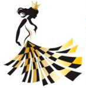

Шахматы в Молдавии
Появление шахмат в Mолдавии
Первые сведения о шахмат на территории современной Моладавии относятся к началу XVIII века. В 1895 в Кишинёве организовалось Общество любителей шахматной игры и открылся шахманый клуб, который проводил небольшие турниры; после закрытия клуба (1906) действовали шахматные кружки при 1-й и 2-й мужских гимназиях, объединявшие учителей. Молдавские шахматисты А. Гитман, Ф. Казнин, С. Столейков, Ф. Хинкулов, А. Шульга, А. Яновский и др. участвовали в конкурсах по решению задач и этюдов шахматного отдела журнала «Нива» (редактор отдела М. Чигорин). В 1907—1914 кишинёвский учитель Шульга организовал 12 турниров по переписке; они имели всероссийское значение и известны под назвазванием «кишинёвских»; в числе участников были известные шахматисты России А. Гончаров, Н. Зубарев, П. Яровой, а также сильнейшие молдавские шахматисты Л. Комарницкий, А. Сибов, А. Шульга.
Последние турниры Сочи 2015
Чемпионат Мира среди женщин.
Круговая система, 9 туров Контроль: 120'+60'+(15'+30'') В случае дележа: 1) Кол-во побед 2) Личные встречи 3) Бергер 4) Тай-брейк: две партии 10+3; в случае ничьей - две партии 5+3; в случае ничьей - Армагеддон 6 на 5 Узнать больше
Наши главные цели и задачи
- Познакомить с шахматной терминологией,
- Объяснить, как двигаются шахматные фигуры,
- Научить основам шахматного дебюта и приемам шахматной борьбы.
- Заинтересовать учащихся шахматами,
- Развить логическое воображение и творческое воображение, необходимое при игре.